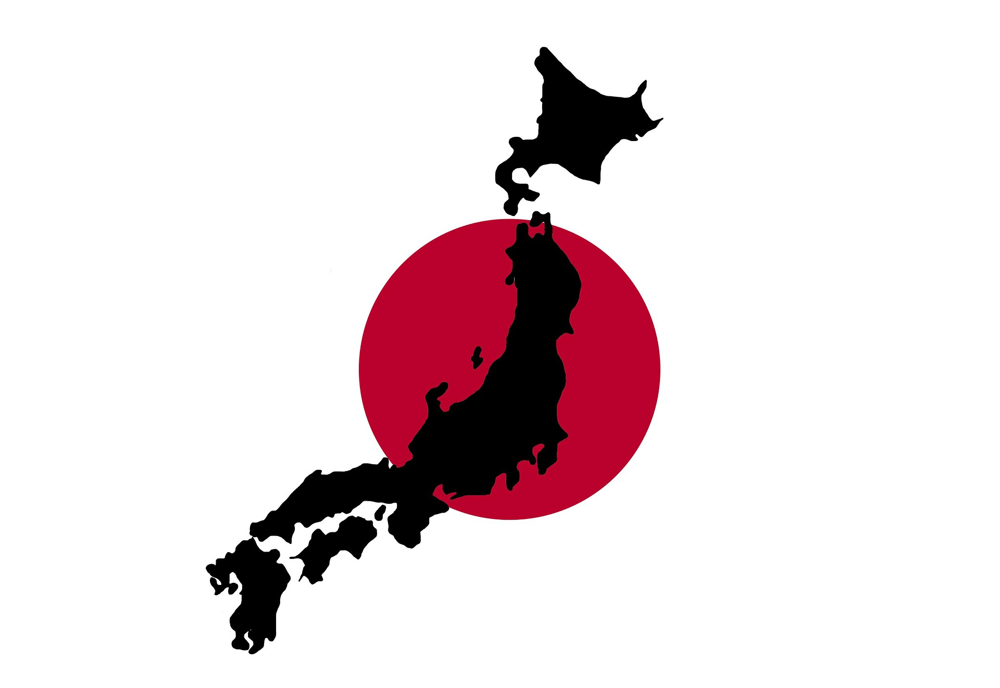

Welcome to this website!!
Basic Idea
Japan is a great country. There are so many great food, places for sightseeing, and enjoyments. Japan is known for its politeness, great hospitality and clean country so it is must-visit country for foreigners. However, there is one big worry when visiting Japan; culture. Visitors may feel hard in Japan because people do not speak English in general, and they may also feel weird since there are certain manners and rules you should follow.
But Don't Worry!! This website will teach you fundamental Japanese that you can use when you vist Japan.
I hope you will learn and enjoy!
What is this website about?
This website is a learning material of basic Japanese and tips that you can use when visiting to Japan. You can know about basic Japanese, some useful Japanese sentences and phrases, higher level Japanese, and one of the most well-known university in Japan called Waseda University.
Who am I?
I am attending Babson College from a Japanese university as an exchange student. As a representative from Japan, I would like to not only gain the US culture but also give fundamental Japanese to foreigners.